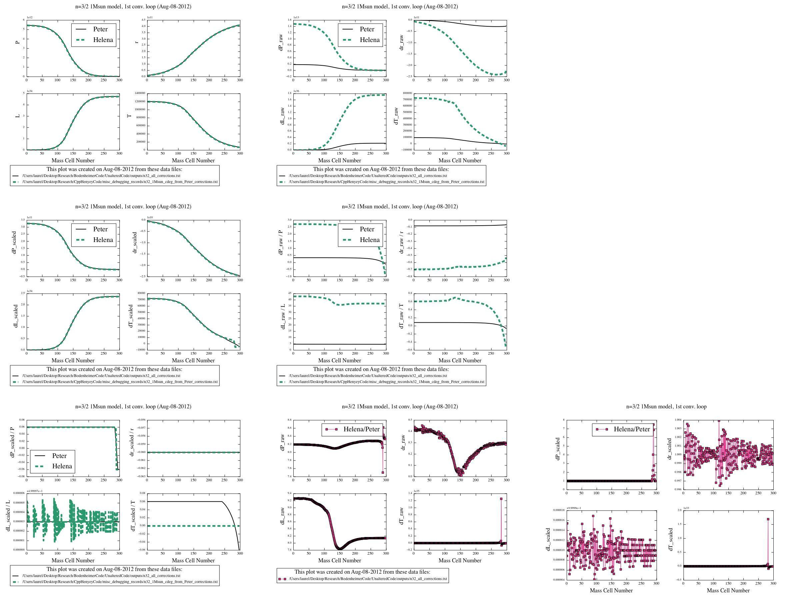

Figure
1:
Comparison of the dX/X values calculated in Helena vs. Peter's code in the first convergence loop for the same 10Mjup no-fusion input model.
Date & Time: Aug. 10, 2012
Location: home
Computing context: MachoMac
(/Desktop/Research/CppHenyeyCode/src, /Desktop/Research/BodenheimerCode/UnalteredCode)
From last time:
Something is off in the way the corrections seem to be applied... Comparison between Peter's code and Helena:
Comparison of the dX/X values calculated in Helena vs.
Peter's code in the first convergence loop for the same 10Mjup
no-fusion input model.
Figure
1:
The starting dX/X profiles are different between the models, even before rescaling the corrections, so the differences aren't due to the different rescaling thresholds specified in the two codes. Need to compare the dX values between Peter's code and Helena for this 10Mjup model.
Python script/command set to compare the X, dX, and dX/X values (both raw and rescaled) between Peter's results and Helena's: /BodenheimerCode/plot_parse_utils/compare_codes_corrections.py
Note: Helena can't converge the n=3/2 1Msun input model (See figure 2 below for comparison of Peter's and Helena's results.)
The corrections calculated in the figures below are based on the exact same CDEG and M/P/r/L/T values, which were generated by Peter's code for an n=3/2 1Msun input model with NO fusion. The fact that the two programs calculate such wildly different correction values indicates that:
Either my Henyey matrix inversion/solution method isn't working as well as I'd thought
in which case, switch Helena back to using the old gauss-jordan matrix inversion method for the 4x4 matrix inversions, and see if the two codes still disagree this much
Or, the slight discrepancies in lookup table values/process between Helena and Peter's code really are significant, and I need to dig into that hardcore.
Note: the Helena run that produced these results used lookup tables generated from Peter's code to calculate the secondary variable values (though I'm not sure table lookups ever get called during the modifiedHenyeyMatrixInversion subroutine. Check on that first thing tomorrow). If this is the issue, it's that same old problem of something about the precision of these kludged-together lookup tables not being high enough for Helena to interpolate accurately within them.
Other debugging avenues to keep in mind tomorrow:
Maybe I should try comparing input models that both codes (should) converge without fusion. Find one of the 1Msun, no-fusion, converged models?
Or, maybe I should try feeding both of them a really simple toy model (linear M/r/T/L/P relations, for example), and see how they differ in calculating the corrections to said model

Figure
2
To Do Today:
Switch
Helena's Henyey solution subroutine back to using the gauss-jordan
elimination method for matrix inversion (instead of the recently
installed 4x4 algorithm) and see if that gets the n=2/3 polytrope
1Msun model corrections to agree with those calculated by Peter's
code.
Done. Gives the exact same correction values that using the
Cramer's rule inversion algorithm produces. So, changing the
specific inversion algorithm isn't the solution.
Correction values from this run with the gauss-jordan elimination inversion method are stored in CppHenyeyCode/misc_debugging_records/corrections_from_matrixInvert.txt
If not, print out the "inverse S" matrices from Peter's code, use them in Helena's algorithm, and see if that produces results that agree (i.e., are the discrepancies caused by differences in the codes' matrix inversion results/precision?)
Also, test both Helena's matrix inversion algorithms (MIAs) on matrices with varying dynamic ranges, to see where they start to break down.
See if Peter's [S | x] --> [S | S^-1 * x] method (which I'm 80% but not 100% sure is what that GIRL subroutine of his is doing) truly is more numerically stable with these ill-conditioned-ish matrices.
If so, implement it in my code. Or perhaps, test its robustness by implementing it in my code and seeing if that'll make Helena and Peter's code produce the same correction values.
Note: modifiedHenyeyMatrixSoln subroutine (in Helena) does NOT call any lookup tables, so the lookup table precision problem ISN'T what's causing the codes to calculate different correction values.
Hints from Greg: Numerical recipes, ill-conditioned matrices (NR apparently has info on how to finess those), "pre-conditioning" a matrix, singular value decomposition?? (may only be worth it for matrices larger than 4x4, but worth keeping in mind)